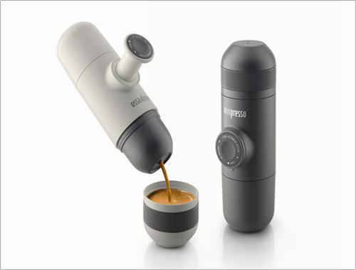

创意生活

超酷的设计WACACO出品的便携式咖啡机 minipresso
上传时间：2016-02-30
突然想品尝一杯现做的浓缩咖啡？不用再寄托于街边的咖啡店了。WACACO 近日带来的便携式咖啡机 minipresso，可以随时解决你的咖啡瘾。这个外形如同保温杯的咖啡机高约 18cm，可以拆解成五个部分。在机器里装入一勺咖啡粉、倒进热水，然后利用壶身上的半自助活塞抽压多次，便可压滤出一杯浓缩咖啡。制作过程中只需动动手，而不用任何压缩空气或电力装置，既便携又容易操作。
WACACO 为用户们带来一些制作咖啡的建议，譬如想要又短又浓的 Ristretto，按压 13 次即可；想喝 Espresso？请按 18 下；如果想得到双倍浓缩，那就按压 28 下。这个省事、便携又可以顺便锻炼手劲的咖啡机目前正在预购中，原价 49 美元（约合人民币 300 元），预购期间还有优惠。
突然想品尝一杯现做的浓缩咖啡？不用再寄托于街边的咖啡店了。WACACO 近日带来的便携式咖啡机 minipresso，可以随时解决你的咖啡瘾。这个外形如同保温杯的咖啡机高约 18cm，可以拆解成五个部分。在机器里装入一勺咖啡粉、倒进热水，然后利用壶身上的半自助活塞抽压多次，便可压滤出一杯浓缩咖啡。制作过程中只需动动手，而不用任何压缩空气或电力装置，既便携又容易操作